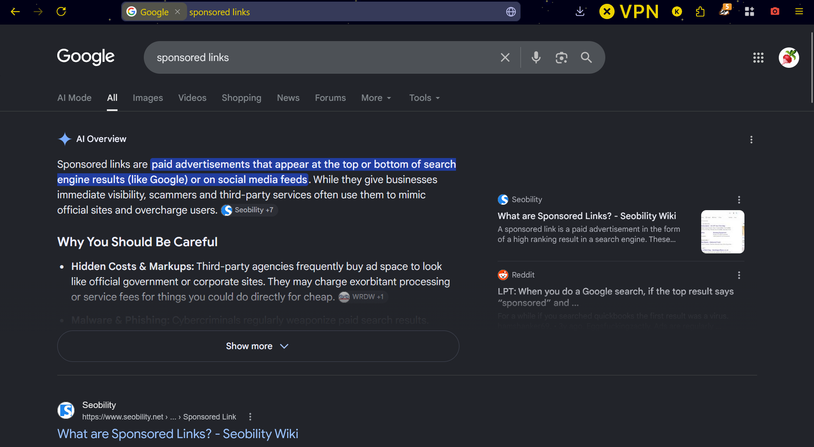

Google Has Gotten Far Too Comfortable
I spend a ton of my time on the internet. I mean, I think in this day and age, that's really a given for the majority of people. And the internet really is a good thing. I mean, I never grew up in a time where I had to pore through physical encyclopedias or blindly trust word of mouth every time I wanted to know something, but I can still recognize just how convenient it is for nearly every question I have to have an answer available in just a few seconds, if not less. Tutorials for literally anything, from installing some obscure python package to needle-felting to changing a tire are readily available in a few clicks of a button.
A huge part of this is thanks to Google, which just began as a research project called BackRub (a very strange name in my opinion, but go off I guess), but expanded rapidly, with it's parent company, Alphabet, becoming a multi-trillion dollar company, That's trillion with a 't'. For reference, the World Food Program estimated they needed around 40 billion dollars a year between around 2023 and 2030 to both feed those without access to food, and build the infrastructure needed to solve world hunger. In comparison however, 2025, Google made 400 billion dollars.
While admittedly, those numbers are staggering, I bring up these numbers more so as a measure of Google's success. Google's parent company, Alphabet, has become the second or third largest company in the world. Google dominates the search-engine competition, and is used almost 200,000 times a second globally. Here comes the problem I have decided to sit down at my computer today to complain about: Google has gotten far too comfortable at the top of the charts, and I honestly hope they start to see how it's beginning to bite them back.
I would say for nearly any person that would be reading this (though of course, there aren't very many people likely reading this at all), you use Google, or at least one of the services it offers, pretty much every day. Unless you are actively choosing to seek out alternatives, which truthfully don't always quite stack up to the original, you very likely at least use Gmail or Drive. Don't get me wrong, I love that these apps are free, and easy to use. In fact, I often use some of them myself. It can feel like such a hassle sometimes to have to go seek out an alternative, even with my burning hatred for large corporations, when deep down, I just want my stuff to work.
There's of course no way for me to tell, but my best guess is that this is the thought process for many people out there. The problem is that, if everyone sticks to these things because they are safe and familiar, the companies have next to no competition. And, when you aren't competing against a hundred other companies for a user base, you can get away with a lot more. I fear that as Google's success has skyrocketed, they have only taken more and more advantage of this.
The above image shows what the sponsored links section on Google used to look like. The sponsored links, or links from companies who paid money to get their results to the top, were clearly indicated via being highlighted in yellow, and/or were banished to the little side bar. These two methods cleanly separated the results that had paid their way to the top from the results that were authentically deemed the best, although admittedly it can be difficult to measure that, since any measure for success stops being useful as soon as it becomes known that its a measure for success. Companies might fill their site description with excessive amounts of keywords, like you might see with obviously dropshipped product listings, but that could make your business seem less trustworthy. So, the best solution for getting your result to the top was a clean solution that still made it easy for users to tell that it was artificially boosted.
In contrast, this is what the current Google page looks like, not cropped or anything, when you search the exact same thing:

The thing I would like to point out is the fact that at the very first glance when you search, the only results you see are generated by Google's AI. This is a problem because of the fact that it takes effort to scroll. I know it sounds silly, as it's a gesture that barely requires you to lift a finger, but nevertheless, it still leads to a good amount of people not looking into information past what's given in the AI overview, which has severely decreased traffic to a lot of websites in recent years. In fact, the article linked here, which discusses how users interactions with the internet have changed over the past couple years stated that only 8% of users click on organic links displayed under a Google AI Overview, also called an AIO, and smaller websites have had a 60% decline in user traffic too.
I hate this. Not only is this literally taking away web traffic from people who spend their own precious time filling the internet with information, from wikipedia contributors to passionate bloggers, but these results are often just flat out wrong. While many of us have seen the funny examples of these inaccuracies, such as naming fruits that end with 'um' such as 'coconutum', 'strawberryum', etc., or quoting information directly from The Onion, the false information Google's AI provides can be genuinely harmful. In one example brought up in an investigation by The Guardian , Googles AI Overview recommended users with pancreatic cancer to avoid foods high in fat. This advice could result in those with pancreatic cancer to not get enough calories, which can lead their body to simply not be able to handle chemotherapy treatments at all.
But, lets just ignore the AI Overview for a second, despite the fact that it takes up roughly 3/4 of the page. The only links that you can see without performing the action of physically scrolling down are sponsored links. However, it is far less clearly shown. The links displayed on the sidebar don't even have the sponsored tag, and the only link below the overview that is able to be seen without scrolling down has a tiny little label right next to the website's URL, which is far less obvious than the highlighted section that sat on top of the results page previously. This new system makes every single website that didn't pay to get to the top literally unable to be seen without that scrolling action. Already, only 0.63% of people go to the next page of Google when looking for results, and this has only more so decreased the amount of people that see these organic results at all.
These results, which not only take traffic away from websites made by real people, but can also be extremely unreliable and unsafe, are the first things you see when you use the Google search engine. But, why would you change Google from how it was, when these results produced by this newer system are clearly less reliable? The answer, as it is the majority of the time with these large corporations, is money. Now, I really have no interest in the economy of the tech world, but when a company is making 100 billion dollars more in a year than it did just two years ago, something had to have changed. It's sad to see that a project designed to be really a net good for people worldwide, allowing them to have access to so much information in seconds, turn into something that prioritizes the money going into their pockets over the people who supported them. Google was always going to need to make money one way or another, but the way the system has changed, from how the sponsored links label has become far less indicative, to the results you see coming from an AI that jumbles together a thousand different answers made by real people, makes me fear a little for the future.
I think Google has gotten far too comfortable at the top. It pumps this AI into the search results, which many people openly dislike, and it makes 100 billion more dollars out of it anyway. It can make the Google Shopping section objectively worse for the non-sponsored results, and people will still go to the page because it's fast. We live in a world where we would compromise something good for something bad that we can have a couple times faster. I don't think it's going to get better if we just keep on accepting this slop because it's easy.
A little call to action for ya
What is there to do to fight against these companies making their services objectively worse because it makes more money? Well, I think that there are a couple things we can do, and these include stuff that I am trying to do myself.
- Get off Google! I switched to DuckDuckGo a couple months back because I like the fact that it doesn't track you, and also has options to turn off AI search or filter out AI images when looking at things online. It's pretty great, and a way easier switch in my opinion compared to replacing Google Drive or something.
- Spend just a little more time looking at sources The internet truly is a wonderful place to be when you are curious. I write these blog posts for fun, and I try my best to put a lot of effort and love into them. (or hate, in some cases.) I think one of the best things to do when I'm curious and doing research on a topic, even just for fun, is to actually...you know...read the sources. I don't link where I got my information in these posts just to make myself seem more credible. I hope that there is someone out there somewhere, even if it's just one of my friends, who actually clicks on them and interprets that information for themselves. While I do spend a good amount of time writing these posts, there's only so much I can fit into one of them, and it's important to be able to see the bits and pieces that can't just be covered in one article. So, take a little time falling down a rabbit hole on the web for fun! You don't often realize how much there is to learn out there until you actually look. :)